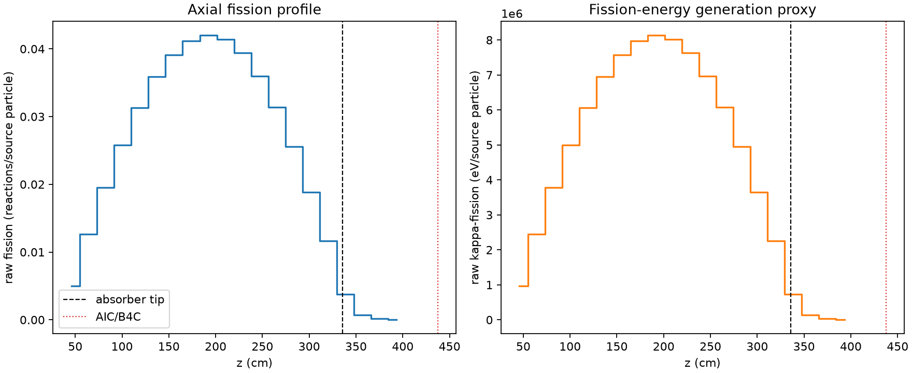
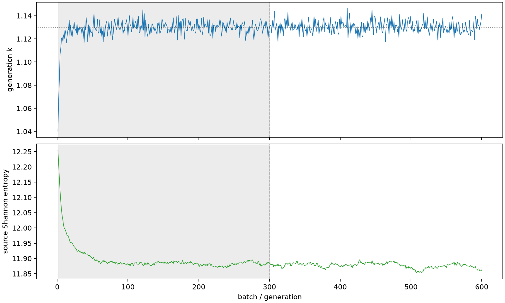

| field | value |
|---|---|
| experiment | V2-ADAPTIVE_01-0013 |
| k | 1.1301577930469877 |
| MC standard error | 0.00016710035490776287 |
| seconds | 1036.2525687240413 |
| acceptance | not_assessed |
| convergence | review_required |
Completed is output integrity only; physical and statistical review required. Zero tallies do not prove zero production or zero uncertainty.
| diagnostic | value |
|---|---|
| geometric fuel voxels | 5280 |
| zero fission tally voxels | 0 |
| low signal fuel voxels | 256 |
| low signal fission share | 6.459814658449019e-05 |
| low signal kappa share | 6.462926350268577e-05 |
| important fission share | 0.9500350555414531 |
| previous filter included | 5024 |
| duration estimate s | 1562.5173488400023 |
| actual minus estimate s | -526.264780115961 |
| fission relative MC error | statistics |
|---|---|
| all_geometric_fuel | {"voxels": 5280, "positive_mean_voxels": 5280, "zero_mean_voxels": 0, "undefined_relative_error_voxels": 0, "median": 0.009773618960061185, "p95": 0.1557114864429467, "maximum": 0.40241871513619404} |
| low_signal | {"voxels": 256, "positive_mean_voxels": 256, "zero_mean_voxels": 0, "undefined_relative_error_voxels": 0, "median": 0.24765463303400903, "p95": 0.33179044556673487, "maximum": 0.40241871513619404} |
| important_95pct | {"voxels": 3659, "positive_mean_voxels": 3659, "zero_mean_voxels": 0, "undefined_relative_error_voxels": 0, "median": 0.008550838264293266, "p95": 0.013068654943377462, "maximum": 0.01624857663909454} |
| outside_previous_filter | {"voxels": 256, "positive_mean_voxels": 256, "zero_mean_voxels": 0, "undefined_relative_error_voxels": 0, "median": 0.24765463303400903, "p95": 0.33179044556673487, "maximum": 0.40241871513619404} |
| kappa_fission relative MC error | statistics |
|---|---|
| all_geometric_fuel | {"voxels": 5280, "positive_mean_voxels": 5280, "zero_mean_voxels": 0, "undefined_relative_error_voxels": 0, "median": 0.009761678197048054, "p95": 0.15551862040975614, "maximum": 0.4018208321121033} |
| low_signal | {"voxels": 256, "positive_mean_voxels": 256, "zero_mean_voxels": 0, "undefined_relative_error_voxels": 0, "median": 0.24718019249718765, "p95": 0.3315041252758424, "maximum": 0.4018208321121033} |
| important_95pct | {"voxels": 3659, "positive_mean_voxels": 3659, "zero_mean_voxels": 0, "undefined_relative_error_voxels": 0, "median": 0.00854044208843496, "p95": 0.013051329035779666, "maximum": 0.016226442783963364} |
| outside_previous_filter | {"voxels": 256, "positive_mean_voxels": 256, "zero_mean_voxels": 0, "undefined_relative_error_voxels": 0, "median": 0.24718019249718765, "p95": 0.3315041252758424, "maximum": 0.4018208321121033} |
| axial bin | fission share | kappa-fission share |
|---|---|---|
| 1 | 0.01089935652065431 | 0.010899878033252737 |
| 2 | 0.027433732688911312 | 0.027433719609912657 |
| 3 | 0.04236392569218308 | 0.04236399253163616 |
| 4 | 0.05595813685772021 | 0.055958229256987416 |
| 5 | 0.067886731922535 | 0.06788642518752254 |
| 6 | 0.07772153093671544 | 0.07772105821779579 |
| 7 | 0.08480358412513499 | 0.08480322546749422 |
| 8 | 0.08928421395539701 | 0.08928387624499885 |
| 9 | 0.09099112664558506 | 0.09099089304614973 |
| 10 | 0.08970355821723201 | 0.08970342500789516 |
| 11 | 0.08549284092089289 | 0.08549242880392287 |
| 12 | 0.07791839666096531 | 0.07791827926850228 |
| 13 | 0.06798122300615168 | 0.0679810917084627 |
| 14 | 0.05537940661210694 | 0.05537916580064778 |
| 15 | 0.04077538751357963 | 0.04077537093233675 |
| 16 | 0.025182261374004523 | 0.025182194911266192 |
| 17 | 0.008225513457000044 | 0.00822688892085211 |
| 18 | 0.0015836276096547733 | 0.0015842318401988263 |
| 19 | 0.0003489371322499574 | 0.00034908423838105865 |
| 20 | 6.650815132602206e-05 | 6.654097178407629e-05 |
Histories include the inactive-to-active transition at batch 300. kappa-fission approximates fission energy production, not total heat deposition.

